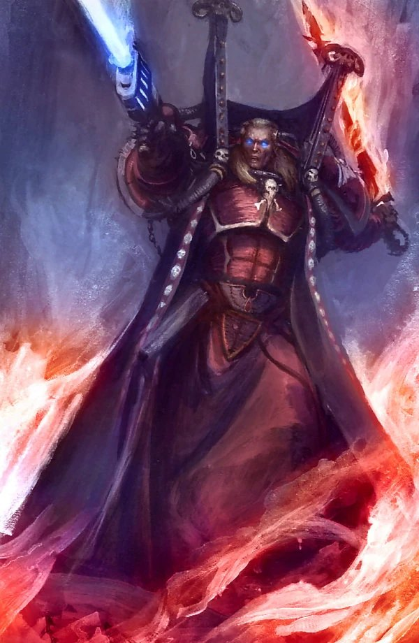
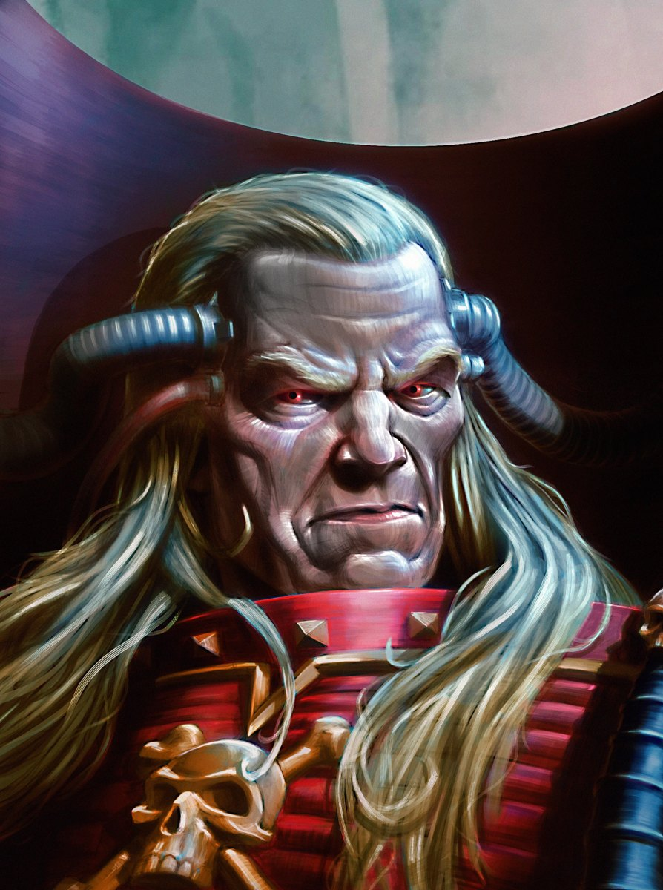

Mephiston
| Mephiston | |
|---|---|
| Chief Librarian of the Blood Angels | |
 The Lord of Death after crossing the Rubicon Primaris, with the sword Vitarus | |
| Chief Librarian of the Blood Angels | |
| Tenure | c. 941.M41 – present |
| Chapter Master | Commander Dante |
| Predecessor | [data sealed by the Librarius] |
| Born | M41, Baal system |
| Rebirth | 941.M41, Hades Hive, Armageddon |
| Status | Active; Primaris Space Marine since the early 42nd millennium |
| Allegiance | Imperium of Mankind |
| Former name | Calistarius |
| Wargear | Vitarus, the Sanguine Sword; psychic hood; plasma pistol; artificer armour |
| Known for | The only Blood Angel known to have overcome the Black Rage, and to have done so twice |
Mephiston, born Calistarius and titled the Lord of Death, is the Chief Librarian and Master of the Librarius of the Blood Angels. He is the only son of Sanguinius known to have overcome the Black Rage, the curse of the Blood Angels' gene-seed, and he has done so twice. He is counted among the most powerful psykers in the Imperium of Mankind, and among the deadliest warriors of the Adeptus Astartes.[1]
As the Lexicanium Calistarius he fought on the space hulk Sin of Damnation in 589.M41. During the Second War for Armageddon he fell to the Black Rage before Hades Hive and was buried with the Death Company under a collapsing cathedral. After seven nights entombed he dug himself free, sane, and took a new name. He was soon raised to lead the Librarius. In the Era Indomitus he crossed the Rubicon Primaris and led the Blood Angels' psykers against the daemon Ka'Bandha in the Devastation of Baal. He remains Chief Librarian.[1][2]
Whispers persist within the Chapter that the victory over the Rage was not without cost, and that something other than the Black Rage took its place. Mephiston keeps his own counsel.[1]
Calistarius
[edit]As a young Lexicanium of the Librarius, Calistarius served as an honorary member of the 1st Company under Captain Raphael in 589.M41, when the space hulk Sin of Damnation drifted out of the Warp close to Baal. Strike Force Raphael boarded the hulk by torpedo, and Calistarius fought alongside the Terminators through kilometres of corridors against a Genestealer infestation until the hulk was cleansed.[1]
Calistarius was a talkative and companionable warrior who sought out his brothers on and off the field. Yet his powers set him apart: his precognition and his devastating psychic blasts were prized by his captain, but he was said to inhabit another sphere of existence from the warriors around him, and to struggle daily with the temptations of the Warp.[1]
Armageddon
[edit]
In 941.M41 the Blood Angels were among the three Chapters that answered the Second War for Armageddon. Fighting before the walls of Hades Hive, Calistarius succumbed to the Black Rage. He was inducted into the Death Company and took part in its final assault on the Ecclesorium of Hades, a cathedral complex that collapsed on the attackers. Calistarius was buried alive in the rubble.[1]
For seven days and nights he lay crushed beneath the stones, raging and fighting the visions of Sanguinius' death. On the seventh night he mastered them. He smashed his way out of the ruins weaponless, his armour broken, and was set upon by a band of Orks that took him for easy prey. He killed them with his hands, tearing the heart from the largest, and then walked back alone to the Imperial lines. He no longer answered to the name Calistarius, and took the name Mephiston.[1]
His strength, physical and psychic, had grown beyond that of almost any of his brothers, and he was soon named Chief Librarian with the title Lord of Death. To many in the Chapter he became a sign of hope, for if one Blood Angel could conquer the Rage, others might. Others found him a stranger. Where Calistarius was talkative, Mephiston speaks only when he must; where Calistarius sought company, Mephiston spends long hours alone. Some brothers say that a part of the primarch's own power runs through him; others, more quietly, wonder what entered the space that the Rage left behind.[1][a]
Chief Librarian
[edit]Hollonan
[edit]In 992.M41 Mephiston led Strike Force Sanguinatus against a Genestealer Cult on the hive world Hollonan. The cult was destroyed swiftly, but a tendril of Hive Fleet Kraken followed. Recognising that his force was outmatched, Mephiston sent a distress call and dug in. In the weeks that followed the defenders were driven back into the underhive. At the Chapel of the Emperor's Repose, Mephiston held off a Tyranid assault alone until relief arrived. A banner was presented to him in honour of the battle.[1]
The Reborn Angel
[edit]On the world of Cybele, near the end of the 41st millennium, a battle-brother of the 6th Company named Arkio took up the Chapter relic called the Spear of Telesto and proclaimed himself Sanguinius reborn. Much of the company swore fealty to him. The schism had been engineered by the Inquisitor Remius Stele, a secret servant of Chaos, in league with the Word Bearers and the Lord of Change Malfallax. Mephiston chose to judge Arkio himself rather than leave the task to Dante, reasoning that as a psyker he could see the corruption that others could not.[1]
On the shrine world of Sabien, Mephiston turned his witch-sight on Arkio and found the seed of Chaos that Stele had planted. He denounced Arkio and challenged him, but yielded the duel to Arkio's own brother, Sergeant Rafen, when he saw that Rafen had been shown his part in a vision of Sanguinius. Rafen killed Arkio with the Spear. When Malfallax manifested and tried to drive the Blood Angels into the Rage, Rafen banished the daemon; but by then Mephiston's will had broken, and he had fallen again into the Black Rage. Rafen turned the power of the Spear on the Chief Librarian and freed him a second time.[1]
Era Indomitus
[edit]The Devastation of Baal
[edit]As the Blood Angels prepared to face Hive Fleet Leviathan, Mephiston received visions during the Long Sleep, brought to him, the Librarius records, by an aeldari Harlequin. He foresaw the fall of the 5th Company to the Black Rage at Diamor, the 13th Black Crusade, and the breaking through of the Bloodthirster Ka'Bandha into the Baal system. He gathered the most powerful Librarians of every Chapter at the Arx Angelicum and led them to the Ruberica, deep in the Cruor Mountains. There, by a ritual that the Ecclesiarchy would call heretical, the conclave opened a window into the realm of Khorne and fought the daemon on its own ground to keep it from Baal.[3]
The ritual held Ka'Bandha back while the defenders fought Leviathan. When the Great Rift opened and the Indomitus Crusade arrived, the remnants of the hive fleet were found consumed, and Ka'Bandha's sign was raised in skulls on Baal Prime.[3][2]
Crossing the Rubicon
[edit]After the birth of the Great Rift, Mephiston underwent the surgery of the Rubicon Primaris and became a Primaris Space Marine. His wargear was remade for his larger frame, including a new psychic hood crowned with skulls.[4]
He was among the first of the Chapter's senior officers to cross the Rubicon, alongside Commander Dante, and his survival was read by many in the Chapter as a sign that the Primaris gene-craft could be trusted with the blood of Sanguinius. As master of the Librarius he has since overseen the testing of the Primaris reinforcements for psychic potential and for the first stirrings of the Red Thirst and the Black Rage, and his judgement decides which of the new warriors are admitted to the Librarius.[1][4]
Beyond the Rift
[edit]Since the appointment of Dante as Lord Regent of the Imperium Nihilus, Mephiston has led Blood Angels strike forces into the dark half of the galaxy, seeking out worlds that have survived without the light of the Astronomican and the threats that prey on them. Reports of these expeditions reaching the Office of the Lord Commander are fragmentary, and parts are sealed by the Blood Angels' own Librarius.[2]
Status
[edit]As of the latest records Mephiston is alive and serves as Chief Librarian of the Blood Angels under Commander Dante. He is a Primaris Space Marine, and he fights in the Imperium Nihilus under the Lord Regent's command.[2]
Powers and character
[edit]
Mephiston's psychic gifts span foresight, the reading of minds and souls, and destructive power: Librarius accounts credit him with seeing the taint of Chaos in a man's soul, healing his own wounds by will, and overpowering lesser daemons by force of mind. His speed and strength in close combat are spoken of in the same terms as the heroes of the Great Crusade. He is solitary and reticent, devoted to his duty and to Dante, and is regarded with awe by most of the Chapter.[1]
As the only Blood Angel known to have returned from the Death Company, Mephiston is a figure of particular importance to the Chapter's Chaplains, who watch over the warriors lost to the Rage. Like Lemartes, the Guardian of the Lost, who bears the Rage and yet keeps enough of his reason to lead the Death Company in battle, Mephiston is taken by some as proof that the curse of the Chapter can be endured. Unlike Lemartes, he claims to have mastered it entirely. The Librarius keeps its own counsel on whether that claim is true, and Mephiston has never spoken of the seven days beneath the Ecclesorium.[1]
Wargear
[edit]- Vitarus, the Sanguine Sword, a force sword that bursts into crimson flame kindled by the heat of his rage.
- A psychic hood, artificer armour, a plasma pistol, and a personal banner from the defence of Hollonan.
Timeline
[edit]| Date | Event |
|---|---|
| M41 | Calistarius is born in the Baal system |
| 589.M41 | As a Lexicanium Calistarius fights aboard the space hulk Sin of Damnation with Captain Raphael's 1st Company |
| 941.M41 | During the Second War for Armageddon Calistarius succumbs to the Black Rage at Hades Hive and is buried for seven days; he emerges as Mephiston |
| 992.M41 | Mephiston leads Strike Force Sanguinatus against a Genestealer Cult and holds the Chapel of the Emperor's Repose on Hollonan against Hive Fleet Kraken |
| late M41 | On Cybele and Sabien Mephiston judges the schism of Arkio, the "Reborn Angel" |
| 999.M41 | During the Long Sleep Mephiston receives visions of the 13th Black Crusade and the fall of the 5th Company at Diamor |
| 999.M41 | Mephiston leads the Librarians of the Chapters into the Ruberica in the Devastation of Baal and holds back Ka'Bandha |
| early M42 | Mephiston crosses the Rubicon Primaris and becomes a Primaris Space Marine |
| M42 | Mephiston oversees the psychic testing of Primaris reinforcements for the Librarius |
| M42 | Mephiston leads Blood Angels strike forces into the Imperium Nihilus under Commander Dante |
See also
[edit]Notes
[edit]- ^ A collection of Librarius records sealed by order of the Chapter Master is said to describe Mephiston's struggle against a second self born in the rubble of Hades. Their contents have not been released, and this account follows the Chapter's public record.
References
[edit]- ^ a b c d e f g h i j k l m n Liber Mortis: Records of the Librarius (partly sealed). Arx Angelicum, Baal.
- ^ a b c d Records of the Indomitus Crusade (ongoing). Office of the Lord Commander.
- ^ a b Scrolls of the Host: Annals of the Blood Angels (rev. 999.M41). Arx Angelicum, Baal.
- ^ a b Cawl, Belisarius (c. 999.M41). Notes on the Ultima Founding. Mars.